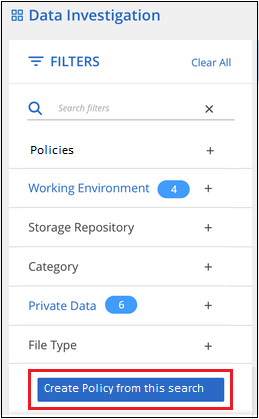
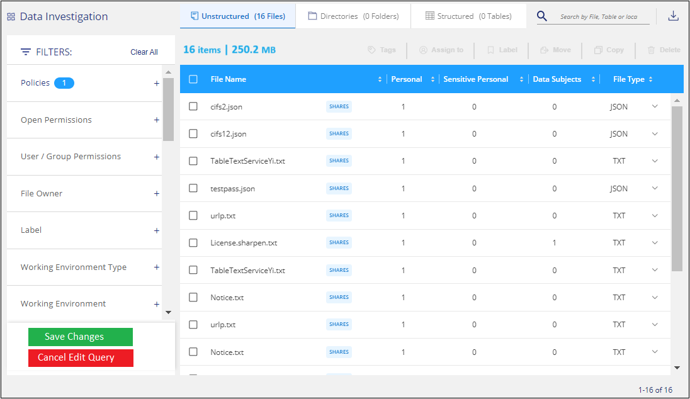

Versionshinweise
Versionshinweise
Weisen Sie Daten Richtlinien zu
 Änderungen vorschlagen
Änderungen vorschlagen
Richtlinien sind wie eine Favoritenliste mit benutzerdefinierten Filtern, die Suchergebnisse auf der Untersuchungsseite für häufig angeforderte Compliance-Abfragen liefern. Die BlueXP Klassifizierung bietet einen Satz vordefinierter Richtlinien auf der Basis allgemeiner Kundenanfragen. Sie können benutzerdefinierte Richtlinien erstellen, die Ergebnisse für die Suche liefern, die speziell auf Ihr Unternehmen zugeschnitten sind.
Richtlinien bieten folgende Funktionen:
-
Vordefinierte Richtlinien Von NetApp basierend auf Benutzeranfragen
-
Möglichkeit, eigene benutzerdefinierte Richtlinien zu erstellen
-
Starten Sie die Untersuchungsseite mit den Ergebnissen Ihrer Richtlinien mit nur einem Klick
-
Senden Sie E-Mail-Benachrichtigungen an BlueXP-Benutzer oder andere E-Mail-Adressen, wenn bestimmte kritische Richtlinien Ergebnisse liefern, damit Sie Benachrichtigungen zum Schutz Ihrer Daten erhalten können
-
Weisen Sie AIP-Etiketten (Azure Information Protection) automatisch allen Dateien zu, die den in einer Richtlinie definierten Kriterien entsprechen
-
Löschen Sie Dateien automatisch (einmal pro Tag), wenn bestimmte Richtlinien Ergebnisse zurückgeben, damit Sie Ihre Daten automatisch schützen können
Auf der Registerkarte Policies im Compliance Dashboard werden alle vordefinierten und benutzerdefinierten Richtlinien aufgelistet, die auf dieser Instanz der BlueXP-Klassifizierung verfügbar sind.

Darüber hinaus werden Richtlinien in der Liste der Filter auf der Untersuchungsseite angezeigt.
Zeigen Sie die Ergebnisse der Richtlinie auf der Seite Untersuchung an
Um die Ergebnisse für eine Richtlinie auf der Untersuchungsseite anzuzeigen, klicken Sie auf die  Klicken Sie für eine bestimmte Richtlinie, und wählen Sie dann Ergebnisse untersuchen.
Klicken Sie für eine bestimmte Richtlinie, und wählen Sie dann Ergebnisse untersuchen.

Erstellen Sie benutzerdefinierte Richtlinien
Sie können eigene benutzerdefinierte Richtlinien erstellen, die Ergebnisse für spezifische Suchen in Ihrem Unternehmen liefern. Die Ergebnisse werden für alle Dateien und Verzeichnisse (Freigaben und Ordner) zurückgegeben, die den Suchkriterien entsprechen.
Beachten Sie, dass die Aktionen zum Löschen von Daten und zum Zuweisen von AIP-Etiketten auf der Grundlage der Richtlinienergebnisse nur für Dateien gültig sind. Verzeichnisse, die den Suchkriterien entsprechen, können nicht automatisch gelöscht oder AIP-Bezeichnungen zugewiesen werden.
-
Definieren Sie auf der Seite „Untersuchung von Daten“ die Suche, indem Sie alle Filter auswählen, die Sie verwenden möchten. Siehe "Filtern von Daten auf der Seite „Datenuntersuchung“" Entsprechende Details.
-
Wenn Sie alle Filtereigenschaften genau so haben, wie Sie sie wollen, klicken Sie auf Create Policy von dieser Suche.

-
Benennen Sie die Richtlinie, und wählen Sie andere Aktionen aus, die von der Richtlinie ausgeführt werden können:
-
Geben Sie einen eindeutigen Namen und eine eindeutige Beschreibung ein.
-
Aktivieren Sie optional das Kontrollkästchen, um Dateien automatisch zu löschen, die mit den Richtlinieparametern übereinstimmen. Weitere Informationen zu Quelldateien mit einer Richtlinie löschen.
-
Aktivieren Sie optional das Kontrollkästchen, wenn Sie Benachrichtigungen-E-Mails an BlueXP-Benutzer in Ihrem Konto senden möchten, und wählen Sie das Intervall aus, in dem die E-Mail gesendet wird. Weitere Informationen zu wenn nicht konforme Daten gefunden werden,Senden von E-Mail-Warnmeldungen anhand von Richtlinienergebnissen.
-
Aktivieren Sie optional das Kontrollkästchen, wenn Sie Benachrichtigungs-E-Mails an andere Benutzer senden möchten, geben Sie bis zu 20 E-Mail-Adressen ein und wählen Sie das Intervall aus, in dem die E-Mail gesendet wird.
-
Aktivieren Sie optional das Kontrollkästchen, um Dateien, die den Richtlinieparametern entsprechen, automatisch AIP-Etiketten zuzuweisen, und wählen Sie die Beschriftung aus. (Nur wenn Sie bereits AIP-Etiketten integriert haben. Weitere Informationen zu "AIP-Etiketten".)
-
Klicken Sie Auf Create Policy.

-
Die neue Richtlinie wird auf der Registerkarte Richtlinien angezeigt.
Senden Sie E-Mail-Warnungen, wenn nicht konforme Daten gefunden werden
Die BlueXP Klassifizierung kann E-Mail-Benachrichtigungen an BlueXP Benutzer in Ihrem Konto senden, wenn bestimmte kritische Richtlinien Ergebnisse liefern, sodass Sie Benachrichtigungen zum Schutz Ihrer Daten erhalten. Sie können die E-Mail-Benachrichtigungen täglich, wöchentlich oder monatlich versenden. Sie können auch E-Mail-Benachrichtigungen an eine andere E-Mail-Adresse senden - bis zu 20 E-Mail-Adressen - nicht in Ihrem BlueXP-Konto.
Sie können diese Einstellung beim Erstellen der Richtlinie oder beim Bearbeiten einer Richtlinie konfigurieren.
Befolgen Sie diese Schritte, um E-Mail-Updates zu einer bestehenden Richtlinie hinzuzufügen.
-
Klicken Sie auf der Liste Richtlinien auf Bearbeiten für die Richtlinie, in der Sie die E-Mail-Einstellung hinzufügen (oder ändern) möchten.

-
Auf der Seite Richtlinie bearbeiten:
-
Aktivieren Sie das Kontrollkästchen „E-Mail all the users in this Account“, wenn Sie Benachrichtigungen-E-Mails an Benutzer in Ihrem BlueXP-Konto senden möchten, und wählen Sie das Intervall aus, in dem die E-Mail gesendet wird (z. B. every Day).
-
Aktivieren Sie das Kontrollkästchen „E-Mail senden“, wenn Sie Benachrichtigungs-E-Mails an weitere Benutzer senden möchten, wählen Sie das Intervall aus, in dem die E-Mail gesendet wird, und geben Sie bis zu 20 E-Mail-Adressen ein.

-
-
Klicken Sie auf Save Policy und das Intervall, in dem die E-Mail gesendet wird, wird in der Policy description angezeigt.
Die erste E-Mail wird jetzt gesendet, wenn Ergebnisse aus der Richtlinie vorliegen - aber nur, wenn Dateien die Kriterien der Richtlinie erfüllen. Es werden keine personenbezogenen Daten in die Benachrichtigungs-E-Mails gesendet. Die E-Mail zeigt an, dass es Dateien gibt, die den Kriterien der Richtlinie entsprechen, und sie enthält einen Link zu den Ergebnissen der Richtlinie.
Löschen Sie Quelldateien automatisch mithilfe von Richtlinien
Sie können eine benutzerdefinierte Richtlinie erstellen, um Dateien zu löschen, die der Richtlinie entsprechen. Beispielsweise können Sie Dateien löschen, die sensible Informationen enthalten und von der BlueXP Klassifizierung in den letzten 30 Tagen erkannt wurden.
Nur Kontoadministratoren können eine Richtlinie zum automatischen Löschen von Dateien erstellen.

|
Alle Dateien, die der Richtlinie entsprechen, werden einmal am Tag dauerhaft gelöscht. |
-
Definieren Sie auf der Seite „Untersuchung von Daten“ die Suche, indem Sie alle Filter auswählen, die Sie verwenden möchten. Siehe "Filtern von Daten auf der Seite „Datenuntersuchung“" Entsprechende Details.
-
Wenn Sie alle Filtereigenschaften genau so haben, wie Sie sie wollen, klicken Sie auf Create Policy von dieser Suche.
-
Benennen Sie die Richtlinie, und wählen Sie andere Aktionen aus, die von der Richtlinie ausgeführt werden können:
-
Geben Sie einen eindeutigen Namen und eine eindeutige Beschreibung ein.
-
Aktivieren Sie das Kontrollkästchen "Dateien, die dieser Richtlinie entsprechen automatisch löschen" und geben Sie dauerhaft löschen ein, um zu bestätigen, dass Dateien dauerhaft von dieser Richtlinie gelöscht werden sollen.
-
Klicken Sie Auf Create Policy.

-
Die neue Richtlinie wird auf der Registerkarte Richtlinien angezeigt. Dateien, die der Richtlinie entsprechen, werden einmal pro Tag gelöscht, wenn die Richtlinie ausgeführt wird.
Sie können die Liste der Dateien anzeigen, die im gelöscht wurden "Statusbereich Aktionen".
Weisen Sie AIP-Etiketten automatisch mit Richtlinien zu
Sie können allen Dateien, die die Kriterien der Richtlinie erfüllen, eine AIP-Beschriftung zuweisen. Sie können beim Erstellen der Richtlinie das AIP-Etikett angeben oder die Beschriftung beim Bearbeiten einer Richtlinie hinzufügen.
Während die BlueXP Klassifizierung Ihre Dateien scannt, werden Labels fortlaufend in Dateien hinzugefügt oder aktualisiert.
Je nachdem, ob bereits ein Label auf eine Datei und die Klassifizierungsstufe des Etiketts angewendet wurde, werden beim Ändern einer Bezeichnung folgende Aktionen ausgeführt:
| Wenn die Datei… | Dann… |
|---|---|
Hat kein Etikett |
Die Beschriftung wird hinzugefügt |
Verfügt über ein bereits vorhandenes Etikett mit einer niedrigeren Klassifizierungsstufe |
Das Etikett der höheren Ebene wird hinzugefügt |
Verfügt über ein bereits vorhandenes Etikett mit einer höheren Klassifizierungsstufe |
Das Etikett der höheren Ebene bleibt erhalten |
Wird eine Bezeichnung sowohl manuell als auch von einer Richtlinie zugewiesen |
Das Etikett der höheren Ebene wird hinzugefügt |
Ist zwei Richtlinien zugewiesen |
Das Etikett der höheren Ebene wird hinzugefügt |
Führen Sie diese Schritte aus, um einer vorhandenen Richtlinie eine AIP-Beschriftung hinzuzufügen.
-
Klicken Sie auf der Liste Richtlinien auf Bearbeiten für die Richtlinie, in der Sie die AIP-Bezeichnung hinzufügen (oder ändern) möchten.

-
Aktivieren Sie auf der Seite Richtlinie bearbeiten das Kontrollkästchen, um automatische Beschriftungen für Dateien zu aktivieren, die den Richtlinieparametern entsprechen, und wählen Sie die Beschriftung aus (z. B. Allgemein).

-
Klicken Sie auf Save Policy und das Etikett wird in der Policy description angezeigt.
|
|
Wenn eine Richtlinie mit einem Etikett konfiguriert wurde, die Bezeichnung aber seitdem von AIP entfernt wurde, wird der Name der Bezeichnung auf AUS gesetzt und die Bezeichnung nicht mehr zugewiesen. |
Richtlinien Bearbeiten
Sie können alle Kriterien für eine vorhandene Richtlinie ändern, die Sie zuvor erstellt haben. Dies kann besonders nützlich sein, wenn Sie die Abfrage (die Elemente, die Sie mit Filtern definiert haben) ändern möchten, um bestimmte Parameter hinzuzufügen oder zu entfernen.
Beachten Sie, dass Sie für vordefinierte Richtlinien nur ändern können, ob E-Mail-Benachrichtigungen gesendet werden und ob AIP-Beschriftungen hinzugefügt werden. Andere Werte können nicht geändert werden.
-
Klicken Sie auf der Liste Richtlinien auf Bearbeiten für die Richtlinie, die Sie ändern möchten.

-
Wenn Sie nur die Elemente auf dieser Seite ändern möchten (Name, Beschreibung, ob E-Mail-Benachrichtigungen gesendet werden, und ob AIP-Beschriftungen hinzugefügt werden), ändern Sie die Änderung und klicken Sie auf Richtlinie speichern.
Wenn Sie die Filter für die gespeicherte Abfrage ändern möchten, klicken Sie auf Abfrage bearbeiten.

-
Bearbeiten Sie auf der Untersuchungsseite, die diese Abfrage definiert, die Abfrage durch Hinzufügen, Entfernen oder Anpassen der Filter und klicken Sie auf Änderungen speichern .

Die Richtlinie wird sofort geändert. Alle Aktionen, die für diese Richtlinie zum Senden einer E-Mail, Hinzufügen von AIP-Etiketten oder Löschen von Dateien definiert sind, werden im nächsten internen ausgeführt.
Richtlinien Löschen
Sie können alle benutzerdefinierten Richtlinien löschen, die Sie erstellt haben, wenn Sie sie nicht mehr benötigen. Sie können keine der vordefinierten Richtlinien löschen.
Zum Löschen einer Richtlinie klicken Sie auf das Klicken Sie für eine bestimmte Richtlinie auf Richtlinie löschen, und klicken Sie dann im Bestätigungsdialogfeld erneut auf Richtlinie löschen.
Liste der vordefinierten Richtlinien
Die BlueXP Klassifizierung bietet die folgenden systemdefinierten Richtlinien:
| Name | Beschreibung | Logik |
|---|---|---|
S3 öffentlich - offengelegte private Daten |
S3 Objekte mit persönlichen oder sensiblen persönlichen Daten, mit offenem öffentlichen Lesezugriff. |
S3 Public ENTHÄLT persönliche ODER sensible persönliche Informationen |
PCI DSS – veraltete Daten über 30 Tage |
Dateien mit Kreditkarteninformationen, zuletzt geändert vor mehr als 30 Tagen. |
Enthält Kreditkarte UND zuletzt geändert über 30 Tage |
HIPAA – veraltete Daten über 30 Tage |
Dateien mit Gesundheitsinformationen, zuletzt geändert vor mehr als 30 Tagen. |
Enthält Gesundheitsdaten (wie in HIPAA-Berichten definiert) UND die letzte Änderung über 30 Tage |
Private Daten - veraltet über 7 Jahre |
Dateien mit persönlichen oder sensiblen persönlichen Daten, zuletzt geändert vor über 7 Jahren. |
Dateien mit persönlichen oder sensiblen persönlichen Daten, zuletzt geändert vor über 7 Jahren |
DSGVO: Die europäischen Bürger |
Dateien mit mehr als 5 Kennungen von EU-Bürgern oder DB-Tabellen, die Kennungen von EU-Bürgern enthalten |
Dateien mit mehr als 5 Kennungen von (einem) EU-Bürgern oder DB-Tabellen, die Zeilen mit mehr als 15 % der Spalten mit den EU-Kennungen eines Landes enthalten. (Eine der nationalen Kennungen der europäischen Länder. Beinhaltet keine Brasilien, Kalifornien, USA SSN, Israel, Südafrika) |
CCPA – Einwohner Kaliforniens |
Dateien, die über 10 California Driver's License Identifier oder DB-Tabellen mit dieser Kennung enthalten. |
Dateien mit mehr als 10 California Driver's License Identifier ODER DB-Tabellen mit California Driver's License |
Namen der Betroffenen - hohes Risiko |
Dateien mit mehr als 50 Namen des Betroffenen. |
Dateien mit mehr als 50 Namen des Betroffenen |
E-Mail-Adressen – hohes Risiko |
Dateien mit über 50 E-Mail-Adressen oder DB-Spalten mit über 50 % ihrer Zeilen, die E-Mail-Adressen enthalten |
Dateien mit über 50 E-Mail-Adressen oder DB-Spalten mit über 50 % ihrer Zeilen, die E-Mail-Adressen enthalten |
Personenbezogene Daten - hohes Risiko |
Dateien mit mehr als 20 Identifikatoren für persönliche Daten oder Datenbankspalten mit über 50 % ihrer Zeilen, die Identifikatoren für persönliche Daten enthalten. |
Dateien mit über 20 persönlichen oder DB-Spalten mit über 50% ihrer Zeilen, die persönliche enthalten |
Sensible personenbezogene Daten - hohes Risiko |
Dateien mit über 20 vertraulichen personenbezogenen Daten-IDs oder DB-Spalten mit über 50 % ihrer Zeilen, die vertrauliche personenbezogene Daten enthalten. |
Dateien mit über 20 sensiblen persönlichen oder DB-Spalten mit über 50% ihrer Zeilen, die sensible persönliche Daten enthalten |